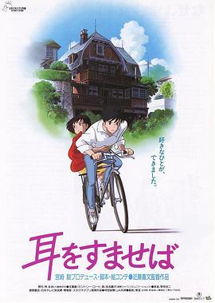

侧耳倾听 / 耳をすませば
又名：心之谷(台) / 梦幻街少女(港) / Whisper of the Heart / Mimi wo sumaseba
我很喜欢这样的作品，淡淡的感动！
作品信息
| 导演 | 近藤喜文 |
| 编剧 | 宫崎骏 / 柊葵 |
| 主演 | 本名阳子 / 小林桂树 / 高山南 / 高桥一生 / 山下容莉枝 / 室井滋 / 露口茂 / 饭冢雅弓 |
| 类型 | 剧情 / 爱情 / 动画 |
| 制片国家/地区 | 日本 |
| 语言 | 日语 / 英语 |
| 上映日期 | 1995-07-15(日本) |
| 片长 | 111分钟 |
| IMDb | tt0113824 |
最后一次看到是 2026-08-01T11:07:21+10:00 · 豆瓣原页